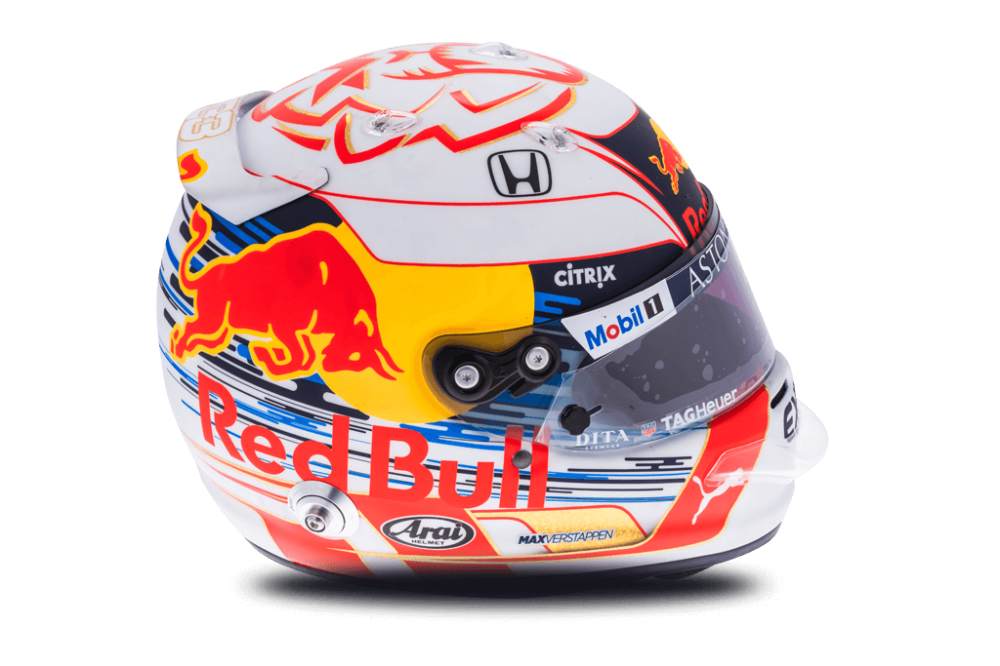

33 
Max Verstappen

| Team | Red Bull Racing |
| Country | Netherlands |
| Podiums | 23 |
| Points | 697 |
| Grands Prix entered | 83 |
| World Championships | N/A |
| Highest race finish | 1 (x5) |
| Highest grid position | 2 |
| Date of birth | 30/09/1997 |
| Place of birth | Hasselt, Belgium |
Biography
He’s Max by name, and max by nature.
Arriving as Formula 1’s youngest ever competitor at just 17 years old, Verstappen pushed his car, his rivals and the sport’s record books to the limit. The baby-faced Dutchman with the heart of a lion took the Toro Rosso – and then the Red Bull – by the horns with his instinctive racing style.
F1’s youngest points scorer soon became its youngest race winner – at the age of 18 years and 228 days – with an opportunistic but controlled drive on debut for Red Bull in Barcelona. A true wheel-to-wheel racer, another stunning drive in Brazil from the back of the pack to the podium on a treacherous wet track kept the plaudits coming.
Verstappen’s no-holds-barred attitude and hard defending sometimes lands him in hot water with his peers and paymasters. There are still the mistakes, which arguably mar his potential, but his bravado and energy is exactly what makes Verstappen a blockbuster talent.
The son of former F1 driver Jos Verstappen and super-quick karting Mum Sophie Kumpen, racing runs through his genes. Despite moving out of Dad’s house to live in Monaco, Verstappen remains close to his family, and though he’s not afraid to speak his mind, he can still be surprisingly shy.
The expectations for the next generation’s leading light are sky high – but with Verstappen there’s a feeling that the sky’s the limit.